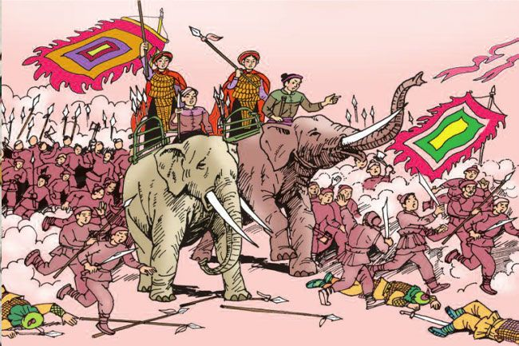
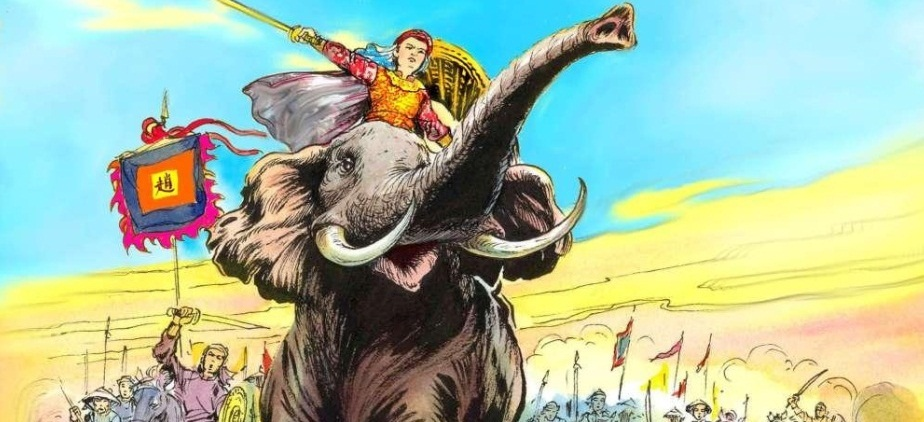
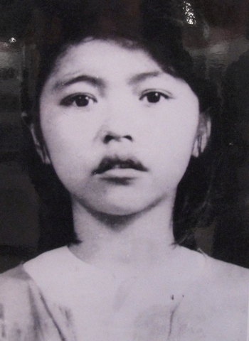
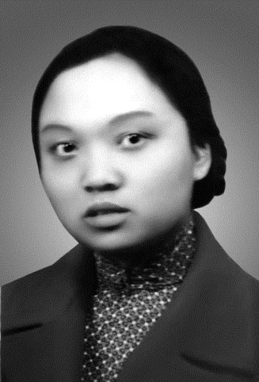
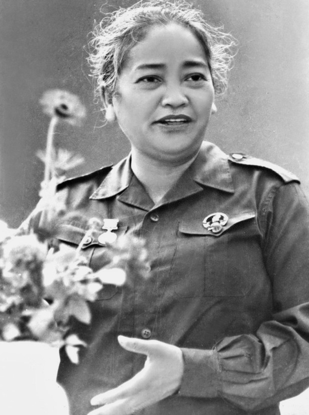

Những người phụ nữ đã làm rạng danh dân tộc
Lịch sử Việt Nam không chỉ được viết nên bởi những trận chiến oai hùng, mà còn bởi những người phụ nữ kiên cường, mạnh mẽ. Họ đã cống hiến cả cuộc đời, thậm chí hy sinh tính mạng vì độc lập, tự do của Tổ quốc.
Hai Bà Trưng – Biểu tượng của khí phách Việt
Khi đất nước bị nhà Hán đô hộ, Hai Bà Trưng đã đứng lên khởi nghĩa, kêu gọi nhân dân đánh đuổi giặc ngoại xâm. Cuộc khởi nghĩa năm 40 sau Công Nguyên không chỉ là niềm tự hào mà còn là minh chứng cho tinh thần yêu nước bất khuất của phụ nữ Việt Nam.
Bà Triệu – “Tôi muốn cưỡi cơn gió mạnh…”
Bà Triệu, người phụ nữ với khí phách hiên ngang, từng nói: **"Tôi muốn cưỡi cơn gió mạnh, đạp luồng sóng dữ, chém cá kình ngoài biển Đông, chứ không chịu cúi đầu làm tì thiếp người ta!"** Câu nói ấy mãi mãi là biểu tượng cho lòng tự tôn dân tộc, truyền cảm hứng cho bao thế hệ sau này.
Những nữ anh hùng thời hiện đại
Không chỉ trong quá khứ, thời hiện đại cũng có những người phụ nữ dũng cảm như **chị Võ Thị Sáu, chị Nguyễn Thị Minh Khai, chị Nguyễn Thị Định**, những người đã chiến đấu không ngừng nghỉ để bảo vệ đất nước.
Họ đã để lại trong lòng dân tộc Việt Nam một tượng đài bất tử về lòng yêu nước, tinh thần bất khuất, và sự hy sinh cao cả.
Võ Thị Sáu
Nguyễn Thị Minh Khai
Nguyễn Thị Định
Phụ nữ Việt Nam ngày nay
Ngày nay, phụ nữ không chỉ giỏi việc nhà mà còn thành công trong nhiều lĩnh vực như khoa học, chính trị, nghệ thuật. Tinh thần kiên cường và trí tuệ của họ vẫn tiếp tục làm rạng danh Việt Nam trên trường quốc tế.